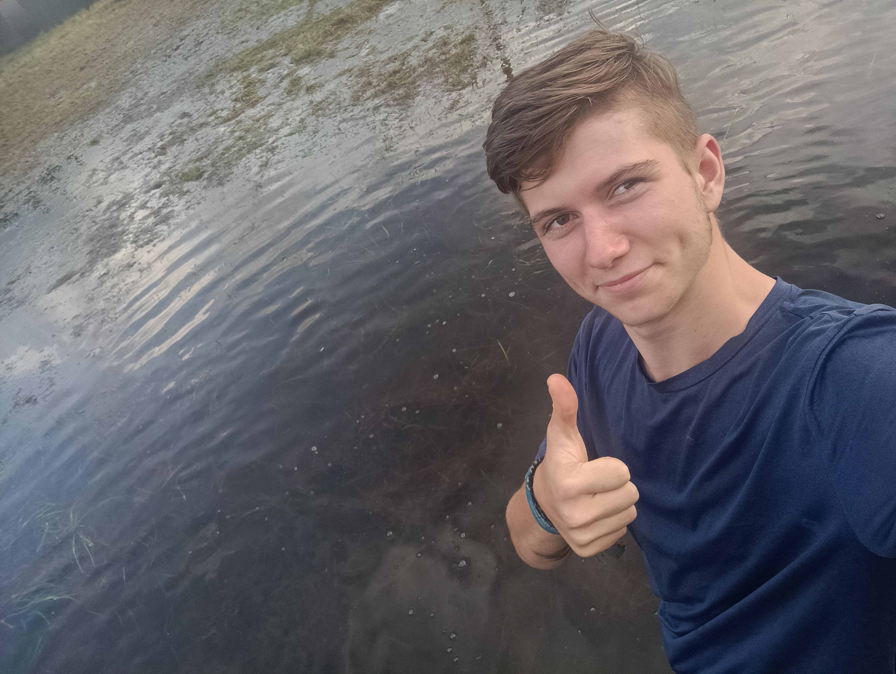
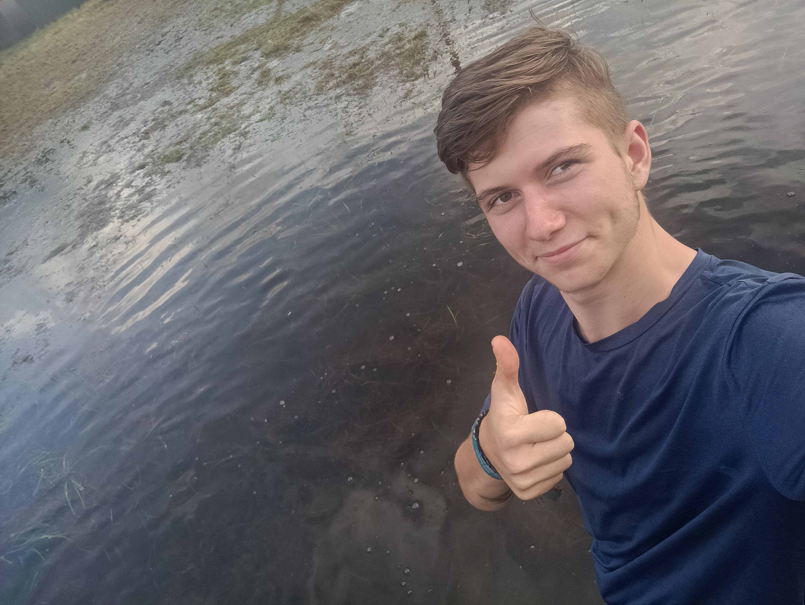

Do skauta už chodím 6 let. Baví mě příroda a trávení s kamarády čas. Také mě baví akce a tábory které tam s dětmi pořádáme.
Zajimava srory se stala například minulý rok, kdy nám tábor vyplavila řeka. (název našeho střediska je Povodeň)
 
